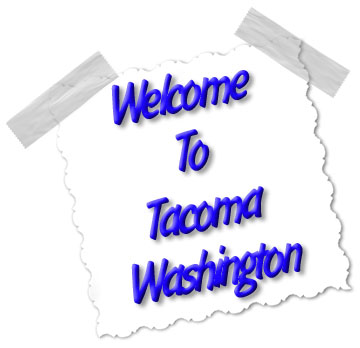
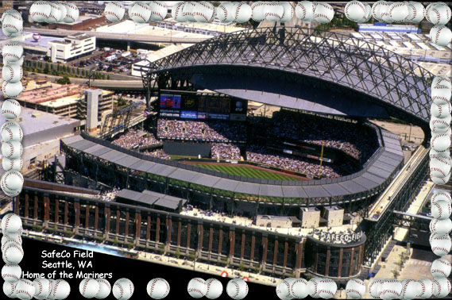
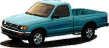

| Seattle Cam. |
 |
| More Seattle Live Cameras |
 |
Tacoma, city, seat of Pierce County, western Washington, a deepwater port on Commencement Bay (an arm of Puget Sound), at the mouth of the Puyallup River; incorporated 1884. It is a service and industrial center and a hub of an important lumbering region. Possessing an excellent natural harbor, it has grown to become one of the largest ports in the nation. The city also uses this resource for its fishing and boatbuilding industries. Manufactures include primary metals, wood and paper products, chemicals, and processed foods. The city is linked to the Olympic Peninsula by the Tacoma Narrows Bridge (1951); to the north lies the Seattle-Tacoma International Airport. Tacoma is the seat of the University of Puget Sound (1888), Pacific Lutheran University (1890), the University of Washington-Tacoma (1990), and two large junior colleges and is the site of the state historical museum. Located nearby are McChord Air Force Base and Fort Lewis. In the city's Point Defiance Park are a zoo, an aquarium, Tacoma's first house, a reconstructed logging camp, and Old Fort Nisqually, which was established nearby to the south by Hudson's Bay Company in 1833 and moved to this site in 1934. Tacoma is a gateway to Mount Rainier and Olympic national parks. The community was laid out in 1868 when the site was selected as a terminus of the Northern Pacific Railroad. A sawmill was established, and in 1873 the railroad was completed. The name Tacoma is derived from the Native American term for Mount Rainier, which is visible from the city. Population (1980) 158,501; (1990) 176,664. |
| City of Tacoma's Official Web Site |
| Seattle Cam. |
|
| More Seattle Live Cameras |

| Dale
Chihuly - World Famous Glass Blower |

Toyota has a truck in its line-up. They named it "Tacoma", after the
second-largest city in the state of Washington. The Japanese are bent on
cracking the U.S. truck market. They haven't been successful so far. I wonder
if this is a new tactic. Name vehicles after cities....Can you imagine? Next
they will come out with: the Nissan "Chicago", or the Mazda "San
Francisco". Somehow, I think they better go back to the drawing board and
be a little more original.
Click to return to Robert's Web Spot